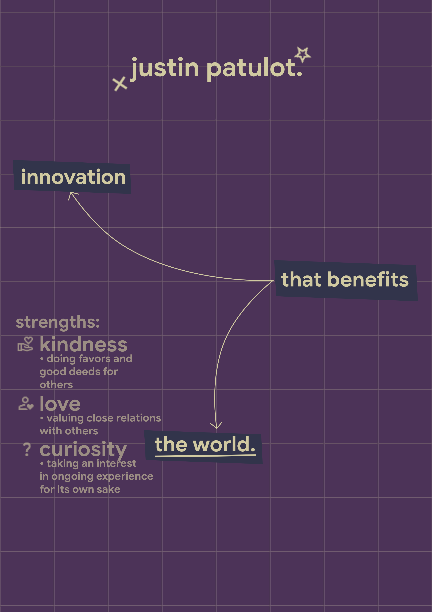
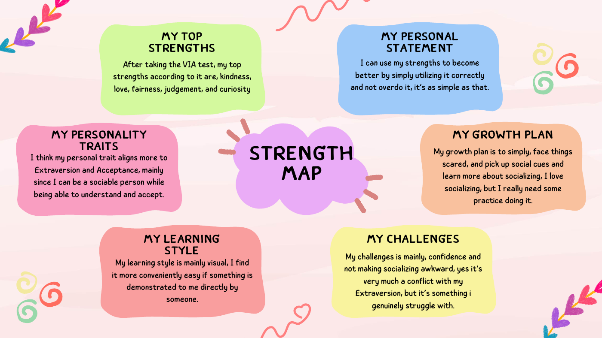

PROJECT 01
portfolio brand launch poster
I made this poster for a portfolio brand launch activity. I kept it simple and minimal, and I'm proud of how the idea turned out.

view full posterSelected projects and personal work.
Selected IR001 projects and other creative work.
PROJECT 01
I made this poster for a portfolio brand launch activity. I kept it simple and minimal, and I'm proud of how the idea turned out.

view full posterPROJECT 02
I designed this strengths map for IR001. I chose it as one of my best works because I like how the design turned out.

open strengths map PDFPERSONAL PROJECT 01
I make music under the alias "tact." You can listen to my work on SoundCloud and streaming platforms.
PERSONAL PROJECT 02
I learned Blender to create abstract 3D art, including pieces inspired by the metalheart aesthetic.